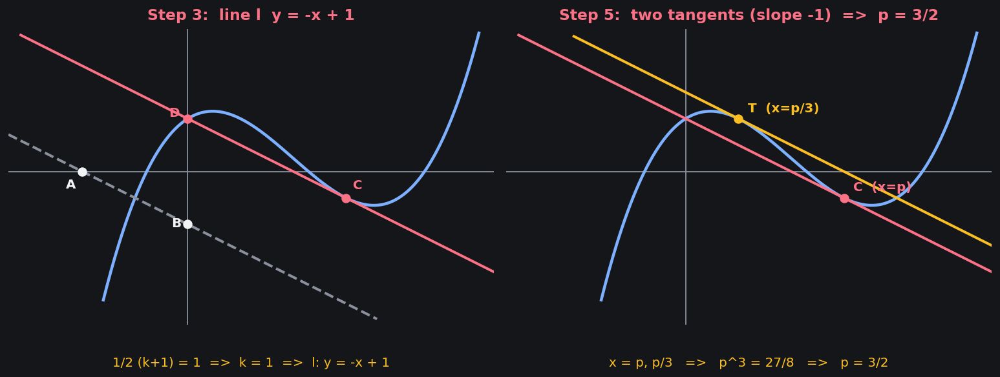

등록된 영상 파일이 없습니다.
DONGIN HIGH SCHOOL FINAL REVIEW
동인고 2학년 미적분1 기말고사 대비 파이널
기출 흐름, 핵심 계산, 고난도 변형까지 한 페이지에서 정리하는 코스터디 마무리 학습 자료입니다.
0/40영상 준비
0/40손풀이 준비
0/40단계풀이 준비
0개 서술형
0개 변형문제

COSTUDY FINAL CARE
마지막 정리는 가볍게, 복습은 촘촘하게
문항별 풀이 영상, 손풀이, HTML 단계별 풀이를 같은 문항 흐름 안에서 바로 확인하고, 학습지 변형문제는 별도 섹션에서 문제지 순서대로 볼 수 있도록 구성했습니다.
도함수의 활용
도함수의 활용 1
이 문항의 손풀이가 아직 등록되지 않았습니다.
등록된 단계별 풀이가 없습니다.
WRITTEN RESPONSE
서술형 대비
서술형 문항 이미지를 한 장씩 넘겨 보며 마지막 풀이 흐름을 점검하는 자료입니다.
0 / 0
서술형 대비
등록된 서술형 PNG가 없습니다.
WORKSHEET VARIATIONS
학습지 변형문제
문제를 먼저 보고 생각한 뒤, 클릭해서 해설을 확인하는 문항별 변형문제 자료입니다.
문제 1 / 36
변형문제
PNG 파일을 넣으면 문항별로 표시됩니다.